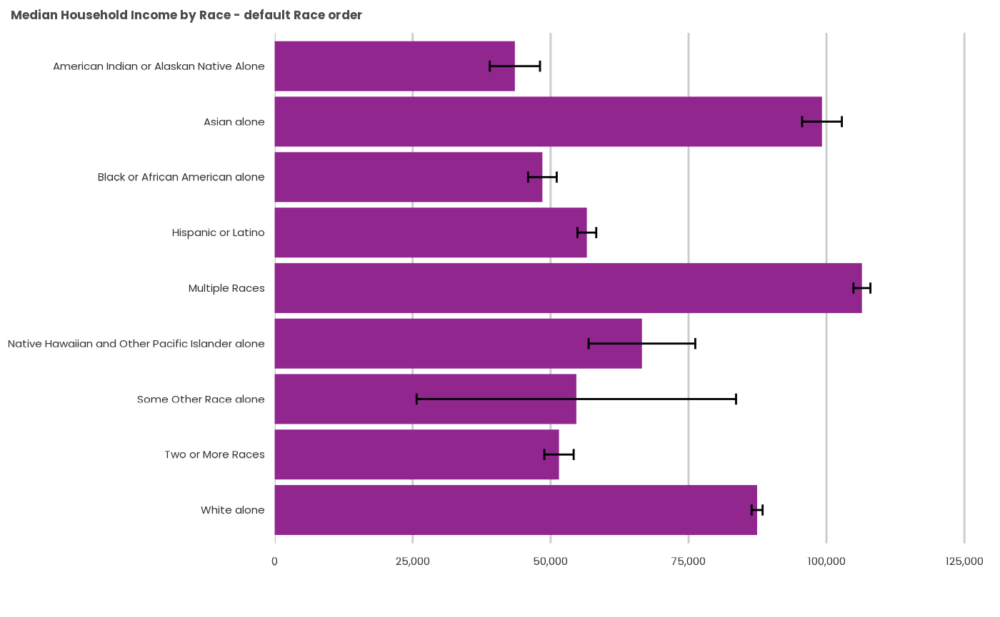
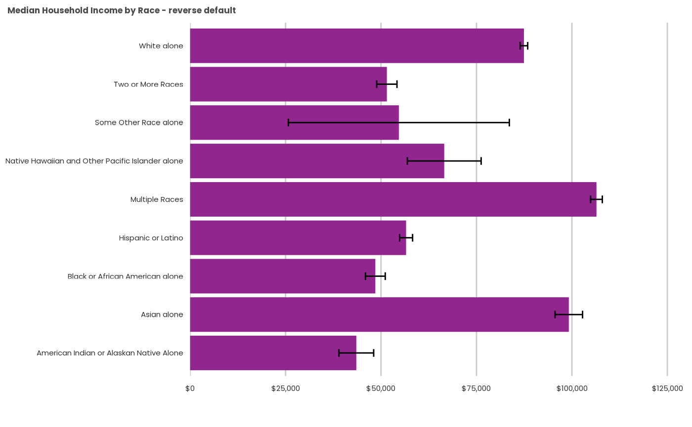
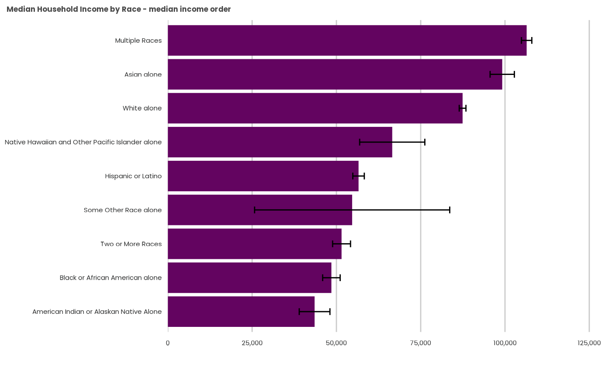
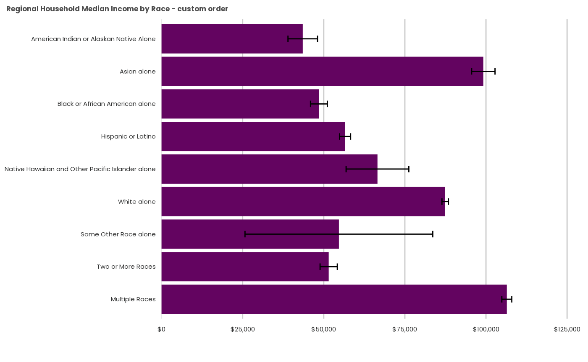
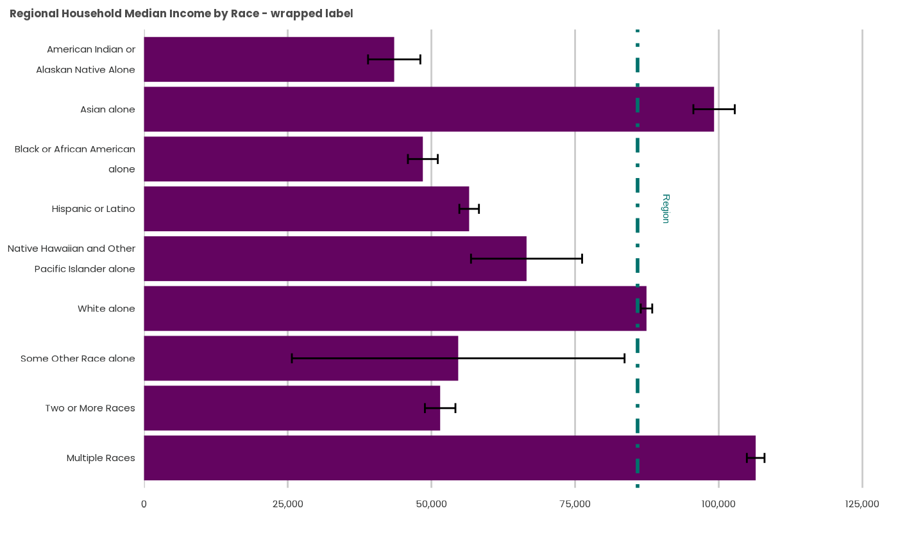

Frequently Asked Questions
FAQs-5.RmdThese examples each use summarized PUMS data, which you can generate yourself using the psrccensus package:
# library(magrittr)
# library(psrccensus)
# library(dplyr)
#
# # Retrieve, summarize and filter Census PUMS data
# z_2019<- get_psrc_pums(span=5,
# dyear=2019,
# level='h',
# vars=c("HRACE", "HINCP"))
#
# hhinc19_x_race <- psrc_pums_median(
# z_2019,
# stat_var="HINCP",
# group_vars="HRACE")Category display order
This is best done prior to invoking the psrcplot function by converting the variable to a Factor datatype with levels specified in the sequence you’d like them displayed.
In the case below, the HRACE variable arrives as a Factor datatype, but still with alphabetical default ordering.
## Warning: package 'dplyr' was built under R version 4.2.2
library(psrcplot)
hhinc19_x_race <- psrcplot::summary_pums_example_data %>%
filter(HRACE !="Total") %>% mutate(DATE=as.character(DATA_YEAR))
# Create chart -- default category ordering
income.chart.default <- static_bar_chart(
t=hhinc19_x_race,
x="HINCP_median", y="HRACE",
fill="DATE",
moe='HINCP_median_moe',
est='currency',
title="Median Household Income by Race - default Race order")
income.chart.default
Factor levels can be reversed using the fct_rev()
function from the forcats package.
hhinc19_rev <- hhinc19_x_race %>%
mutate(HRACE_REV=forcats::fct_rev(as.factor(HRACE)))
income.chart.reverse <- static_bar_chart(
t=hhinc19_rev,
x="HINCP_median", y="HRACE_REV",
f="DATE",
moe='HINCP_median_moe',
est='currency',
title="Median Household Income by Race - reverse default")
income.chart.reverse
Sort by value
You may wish to order the categories by the data variable instead.
This uses another forcats function,
fct_reorder() (more complex multi-variable ordering
expressions are also possible using this function).
hhinc19_low_high <- hhinc19_x_race %>%
mutate(HRACE_low_high=forcats::fct_reorder(HRACE, -HINCP_median))
income.chart.low_high <- static_bar_chart(
t=hhinc19_low_high,
x="HINCP_median", y="HRACE_low_high",
fill="DATE",
moe='HINCP_median_moe',
color='psrc_dark',
est='currency',
title="Median Household Income by Race - median income order")
income.chart.low_high
Sort by a user-specified order
Sometimes there is an logic that can’t be captured by alphabetical or numeric rank–for example, setting remainder or combination categories last. To do that, you’ll need to order the factor levels manually. Be careful that you type the exact factor names, or they will be omitted (ugh).
hhinc19_custom <- hhinc19_x_race %>%
mutate(HRACE_custom=factor(HRACE,
levels = c("American Indian or Alaskan Native Alone",
"Asian alone",
"Black or African American alone",
"Hispanic or Latino",
"Native Hawaiian and Other Pacific Islander alone",
"White alone",
"Some Other Race alone",
"Two or More Races",
"Multiple Races")))
income.chart.custom <- static_bar_chart(
t=hhinc19_custom,
x="HINCP_median",
y="HRACE_custom",
fill="DATE",
moe='HINCP_median_moe',
color='psrc_dark',
est='currency',
title= "Regional Household Median Income by Race - custom order")
income.chart.custom
Further text wrapping for axis labels
By default, psrcplot wraps lengthy column labels and leaves horizontal bar labels alone. If you want text wrapping, however, you can add it wherever it is necessary using ggplot2 and stringr. You may need to tinker with the wrap length to achieve what you want.
income.column.wrapped <- income.chart.custom +
ggplot2::scale_x_discrete(labels=function(x) stringr::str_wrap(x, width=25)) +
ggplot2::ggtitle("Regional Household Median Income by Race - wrapped label")
income.column.wrappedBy inserting the expression in the label rather than altering the
object beforehand, this leaves the category variable in the data alone
(str_wrap would otherwise convert the type to character and
lose factor level ordering, etc).
Notice bar charts use ggplot2::scale_x_discrete() the
same as do column charts (not scale_x_discrete()). This is
a byproduct of their construction column charts with flipped axes.
Add a reference line
Along with a lot of formatting options, the key argument here is to know the intercept value.
ref_val <- summary_pums_example_data %>% filter(HRACE=="Total") %>% pull(HINCP_median) %>% round()
income.column.refline <- income.column.wrapped +
ggplot2::geom_hline(yintercept= ref_val,
linetype='dotdash',
linewidth=1,
show.legend = FALSE,
color='#00716c') +
ggplot2::annotate("text",
y=ref_val+5000,
x=6,
label="Region",
angle='270',
color='#00716c')
income.column.refline
Notice that reference lines always use
ggplot2::geom_hline() rather than
geom_vline(); as with the previous example, this stems from
bar charts’ construction as column charts with flipped axes.